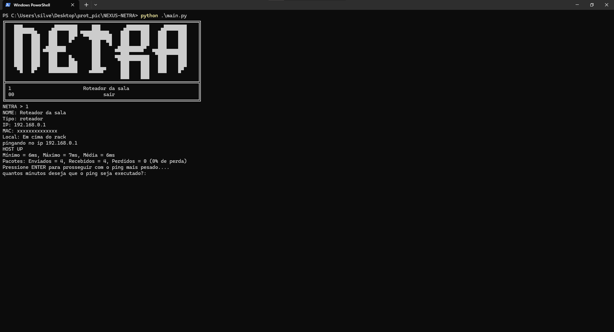

← voltar ao portfólio
$ cat nexus-netra/README.md
NEXUS NETRA
v1 pronta · recebendo updates
Ferramenta de diagnóstico de rede em Python, feita para apontar possíveis causas de falha com base em evidência — não só dizer que um dispositivo está "offline".

Execução real: consulta de dispositivo cadastrado e teste de ping com estatísticas de latência e perda de pacotes.
$ cat objetivo.txt
Quando um dispositivo de rede para de responder, "está offline" raramente é a resposta completa — pode ser o cabo, o switch, o próprio host, ou a rota até ele. O NEXUS NETRA nasceu pra organizar esse diagnóstico: cadastrar os dispositivos de uma rede local (roteadores, access points) e rodar testes que deixam evidência, não só um veredito seco.
$ cat funcionalidades.txt
Já implementado e funcionando:
- Cadastro de dispositivos via JSON (nome, tipo, IP, localização)
- Consulta de dispositivo cadastrado pelo menu do terminal
- Teste de conectividade via ICMP (ping)
- Medição de latência mínima, máxima e média
- Cálculo de taxa de perda de pacotes
- Teste estendido configurável (ping mais pesado, por tempo definido)
- Interface em terminal com banner ASCII
$ cat stack.txt
Python
ICMP
JSON
redes de computadores
arquitetura modular
$ cat em_desenvolvimento.txt
- Dashboard web para visualizar o status dos dispositivos sem depender do terminal
- Testes de gateway e de portas TCP específicas
- Motor de diagnóstico baseado em regras, pra sugerir causa provável da falha
- Geração de relatórios técnicos exportáveis